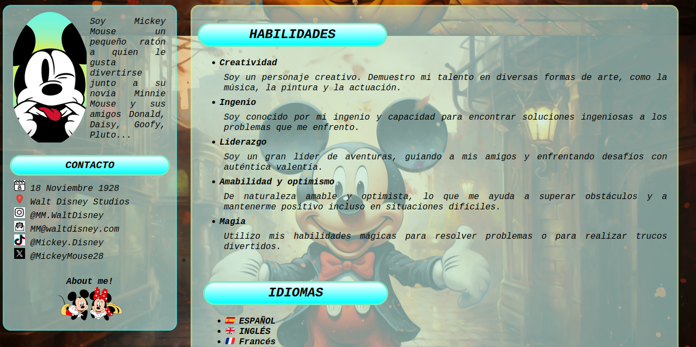
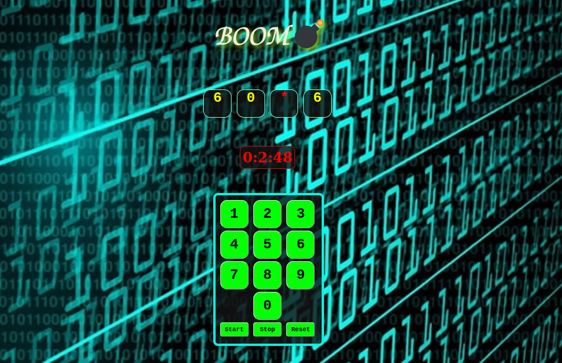

Práctica 1: CV
El objetivo de esta práctica es desarrollar un CV utilizando HTML y CSS.
- El CV se adapta a dispositivos móviles
- Compuesto por:
- Una página principal index.html
- Una página about.html
Práctica 2: ¡BOOM!
El objetivo de la práctica 2 es utilizar lo que sabemos sobre javascript para programar un juego sencillo.
¡BOOM!💣
Consiste en adivinar la clave secreta de cuatro números lo más rápido posible.
Para desarrollar este juego era necesario implementar los siguientes componentes:
- Un espacio para mostrar la clave secreta compuesta por 4 números.
- Un espacio para mostrar el contador.
- Botones con los dígitos del 0 al 9.
- Botones Start, Stop y Reset.
Práctica 3:

Senserit mediocrem vis ex, et dicunt deleniti gubergren mei. Mel id clita mollis repudiare. Sed ad nostro delicatissimi, postea pertinax est an. Adhuc sensibus percipitur sed te, eirmod tritani debitis nec ea. Cu vis quis gubergren.
Ver la prácticaPráctica 4:
Senserit mediocrem vis ex, et dicunt deleniti gubergren mei. Mel id clita mollis repudiare. Sed ad nostro delicatissimi, postea pertinax est an. Adhuc sensibus percipitur sed te, eirmod tritani debitis nec ea. Cu vis quis gubergren.
Ver la prácticaPráctica 5:
Senserit mediocrem vis ex, et dicunt deleniti gubergren mei. Mel id clita mollis repudiare. Sed ad nostro delicatissimi, postea pertinax est an. Adhuc sensibus percipitur sed te, eirmod tritani debitis nec ea. Cu vis quis gubergren.
Ver la práctica